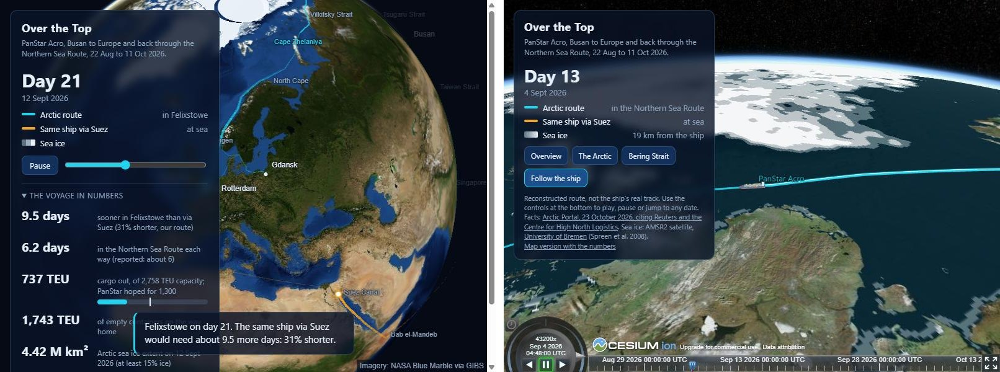

The question
Most container ships between East Asia and Europe go through the Suez Canal. The Northern Sea Route along Russia's Arctic coast is much shorter on the map, and as the summer ice shrinks it is open for a few weeks a year. In 2026 a South Korean ship, the PanStar Acro, made the first Korean commercial round trip to Europe that way: Busan, Felixstowe, Rotterdam, Gdansk and back, from 22 August to 11 October.
I wanted to see that voyage against the ice it sailed through, and to check the headline claims with open data: how much shorter and faster the route really was than Suez, how close the ship came to the ice, how the ice changed while it was up there, and whether the trip made sense as business. The answer is two linked globes that replay the voyage day by day, and the notebooks behind them.
The data
| What | Source | Period |
|---|---|---|
| Voyage facts: dates, ports, distances, speed, cargo | Arctic Portal (citing Reuters and the Centre for High North Logistics); Container News; The Maritime Executive | Aug to Oct 2026 |
| Daily sea ice concentration, 6.25 km grid, 51 daily files | University of Bremen, AMSR2 satellite (ASI algorithm) | 22 Aug to 11 Oct 2026 |
| The ship's route: waypoints, timing, a Suez route for comparison | Reconstructed in this project (notebook 00route) | the voyage |
| The 2026 Arctic minimum in the long record | NASA and the National Snow and Ice Data Center (NSIDC) | Sep 2026 |
| Globe imagery | NASA GIBS (Blue Marble); Bing Maps via Cesium ion | background only |
The ship's real position track (AIS) is not openly available, so the route is drawn from waypoints along the usual corridor, through the Bering Strait and round Cape Zhelaniya, at one steady speed with 1.5 days in each European port. It matches the reported distances to within 2.1%. Every figure about distance to the ice is therefore about this reconstructed track, not the ship's real one.
Two globes, one voyage
| Page | What it shows |
|---|---|
| Map globe (MapLibre and deck.gl) | The voyage day by day with a "ghost" ship on the Suez route, the day's ice in three shades, and the voyage in numbers. Works on phones. |
| 3D globe (CesiumJS) | The same voyage in 3D on aerial imagery, with a 3D model of the ship, a camera that follows it, and views of the Arctic and the Bering Strait. Desktop only. |
| Notebooks (Python) | 00route builds and checks the route; 01seaice downloads the ice, draws it and measures the ship against it. |

What the data shows
The shortcut is real: about nine and a half days to Europe
By the reported planning distances, Busan to Felixstowe was 7,577 nautical miles through the Arctic against 10,877 via Suez (30% shorter), and Gdansk to Busan 7,660 against 11,788 (35% shorter). On the reconstructed route the ship reaches Felixstowe on day 21.1, which matches the real arrival on 12 September; via Suez it would arrive on day 30.6. Over the two ocean legs the Arctic saved about 7,400 nautical miles, roughly three weeks of sailing. Even so, the whole round trip took 50 days, against the 45 the Korean ministry had aimed for.
The main ice pack stayed well away from the route
For each day in the Northern Sea Route, the notebook takes the ship's noon position on our track and measures the distance to the ice of that day. The satellite shows 0% ice under the ship on every day of both passages. The nearest "main pack" (at least 50% ice, away from the coast) was on most days 230 to 450 km to the north. The closest single ice cells, 10 to 19 km away at the Vilkitsky Strait, are thin fringes along the coast and partly false ice (see the data problems below).
![Two charts. Left: distance from the track to the main ice pack at noon on each day of the Northern Sea Route, by sea area from the Kara Sea to the Chukchi Sea, westbound and eastbound; the pack is 146 to 690 km away, while single coastal ice cells come within 10 to 19 km at the Vilkitsky Strait. Right: Arctic sea ice extent each day from 22 August to 11 October, falling to 4.38 million square kilometres on 8 September and rising to 6.02 million by 11 October, with the westbound and eastbound passages shaded](images/cs_ice.png)
The satellite saw open water; the crew still met ice
Press reports describe drifting ice that blocked the ship near Wrangel Island in the Chukchi Sea and forced an overnight stop, and evasive turns around harder ice near the Vilkitsky Strait. Neither shows in the daily maps. A 6.25 km cell with a few scattered floes reads below the 15% cut-off, ice drifts within a day, and the real ship may have sailed north of our track. Daily concentration maps are good for seeing the corridor and the season; they are not a picture of what the bridge sees.
The window was closing on the way home
The ship went west just before the summer minimum, which the Bremen data puts at 4.38 million km² on 8 September, and came back east as the freeze began. By its return to Busan on 11 October the ice had grown to 6.02 million km², 37% more than at the minimum. The summer was not exceptional: NASA and NSIDC put the 2026 minimum at 4.6 million km² on 12 September, tied for the 10th lowest in the satellite record. The route was open in an ordinary recent summer, not only in a record one, but the window is weeks long.
A quarter full going, empty coming back
On the way back the ship carried 1,743 TEU of empty containers and no import cargo, because the planned shipments could not be secured. The time saving is real, but a container service lives on cargo in both directions, and the route adds costs for ice navigation and insurance and the question of sanctions along Russia's coast. South Korea is considering regular sailings by 2030 and will use the trial's data to judge them.
| Leg | Arctic (nm) | Suez (nm) | Shorter | Cargo carried |
|---|---|---|---|---|
| Busan to Felixstowe | 7,577 | 10,877 | 30% | 737 TEU |
| Gdansk to Busan | 7,660 | 11,788 | 35% | 1,743 TEU empty |
Problems in the data, and how they were handled
- No real track. The ship's AIS positions are not open, so the route is reconstructed and checked against every published distance (within 0.4% to 2.1%). Both globes say so on screen, and all ship-to-ice figures refer to this track.
- Sources that disagree. Arctic Portal gives about 6 days in the Arctic each way; another report has the ship entering the Arctic on 31 August and clearing its western side on 9 September. The reports also name Gdansk and nearby Gdynia for the Polish call. The project follows Arctic Portal and keeps the others as a check; the Felixstowe arrival on day 21 agrees in all of them.
- False ice along the coasts. A satellite microwave footprint near a shore mixes land with sea, so cells next to the coast can show 15% to 50% "ice" in open water. Every ice cell within 60 km of the ship on its closest days lay within 18 km of land. The main finding therefore uses the distance to ice at least 50% concentrated and at least 25 km from any coast.
- Two different minimums. The Bremen data gives 4.38 million km² on 8 September; NSIDC gives 4.6 million km² on 12 September. They use different grids, satellites and averaging (NSIDC a five-day mean), so each is compared only within its own series.
- Noisy single days. On 23 August the extent jumps by 0.38 million km² and falls back the next day. Days like this are kept as published, not smoothed, and no finding rests on a single day.
- The pole and the date line. The satellite cannot see the last 100 km round the pole, filled here as ice; the globes cannot draw shapes above about 85 N or across the 180 degree meridian without help, so the ice is cut and capped with care, and checked visually on real graphics cards.
Limits
The route is reconstructed with one steady speed and fixed port stays, so it is right in distance and dates but not in the detail of where and how fast the ship sailed in the ice. The ice is a daily snapshot of concentration only, not thickness, type or the floes a ship meets, and it is compared with the ship at noon. This is one voyage in one season, and the project has no data on fuel, emissions, freight rates or insurance, so it cannot say whether the route paid. The voyage figures come from news reports, not the operator's own records.
Where this could be useful
- Shipping and logistics planners: how wide the season window is, how fast it closes in autumn, and what a reliable schedule would have to allow for.
- Trade and port analysts: the time saved against the cargo imbalance, which matters more than the distance for a regular service.
- Climate communication and teaching: a single, concrete story that links the shrinking summer ice to trade routes, with the uncertainty shown honestly.
The same approach, a reconstructed route checked against published figures and replayed against daily open satellite data, works for any voyage or route where the real track is not public.
About
Lik Ren Tai applies data science in two fields: environmental science and railway systems. This is the fourth project in the series, after a case study of rail use in the Klang Valley, Klang Valley Reach and Risk and a KPI dashboard of the Seoul subway, and the first built around satellite data and 3D. Built with Python (rasterio, shapely, pandas), MapLibre GL JS, deck.gl and CesiumJS.
Voyage facts: Arctic Portal, 23 October 2026, citing Reuters and the Centre for High North Logistics; Container News; The Maritime Executive. Sea ice: AMSR2 ASI sea ice concentration, University of Bremen (Spreen, Kaleschke and Heygster 2008; Melsheimer and Spreen 2019, PANGAEA, CC BY 4.0). 2026 minimum: NASA and NSIDC. Imagery: NASA GIBS; Bing Maps via Cesium ion. This is an independent project, not affiliated with or endorsed by PanStar, the Korean Ministry of Oceans and Fisheries or any of the sources.